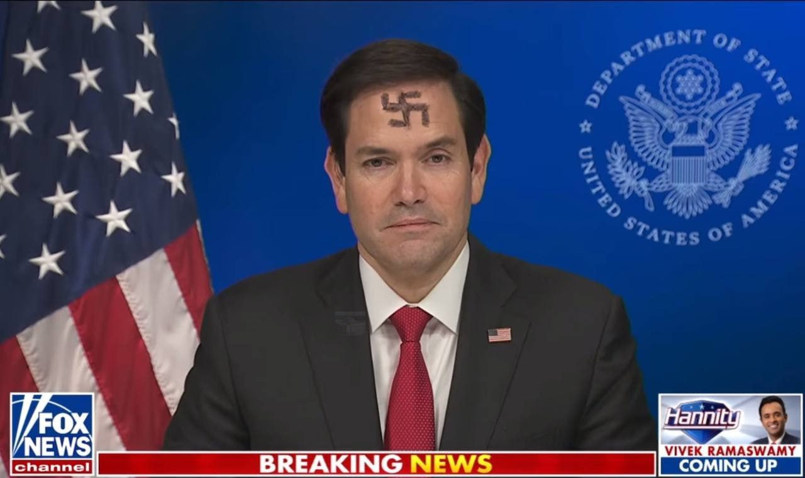
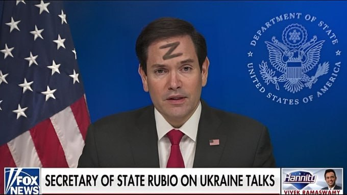
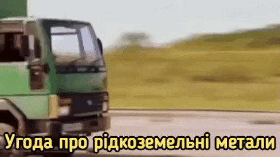
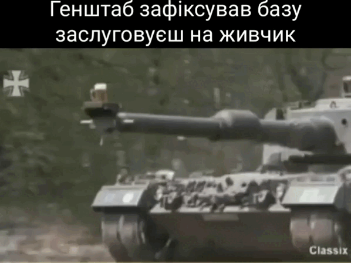
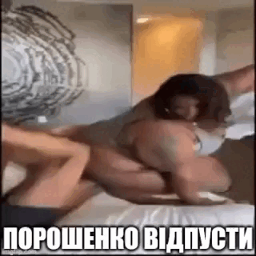

Рубіо про завершення війни РФ проти України: Є план "А" і план "Б"
Державний секретар США Марко Рубіо заявив про план "А" і план "Б" з боку американської сторони щодо завершення війни Росії проти України.
Джерело: Рубіо в інтерв’ю CBS News
Пряма мова Рубіо: "Це складна, трирічна війна, яка триває на дуже довгому військовому фронті, з великою складністю.
Тож ніхто не стверджує, що це легко, але я хочу, щоб усі зрозуміли, план такий. План А: припинити вогонь, щоб ми могли перейти до плану Б, другого етапу, який полягає в тому, щоб посадити усіх за стіл переговорів, можливо, за допомогою човникової дипломатії, щоб знайти спосіб назавжди покласти край цій війні в такий спосіб, щоб це було довготривалим, враховувало потреби кожного і так далі".
Яка фотографія на вашу думку відповідає цьому посту?
ця?

чи краще ось ця?

Якщо маєте кращу надішлить її на мою пошту
Оригінальне посилання на статтю
Список моїх олюблених гіфок
- 
- 


- 
Сон п'яного російського пропагандиста про поганих українців
- Нецензурні букви
-
- Більше нецензурних буквів
- Більше нецензурних буквів
- Більше нецензурних буквів
- Нецензурні букви
- Нецензурні букви
- Нецензурні букви
- Нецензурні букви
Автор:
невідомий